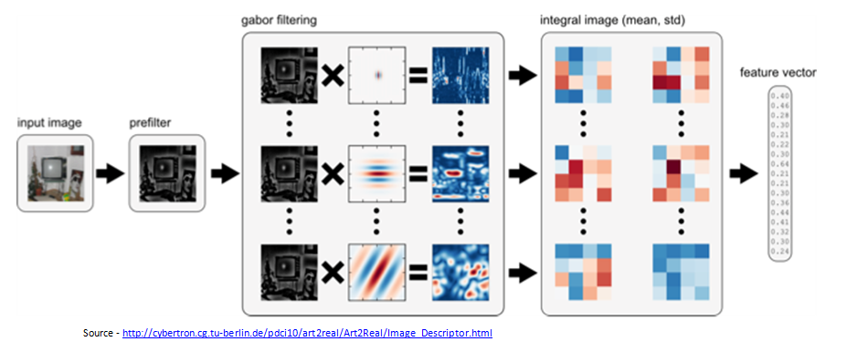
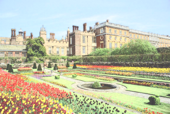
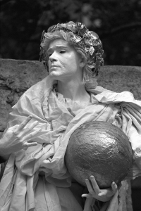
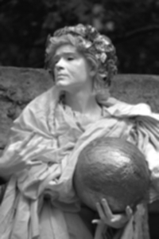
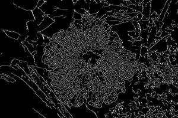

GIST is the low dimensional representation of an Image. It encodes the structural information of the image by dividing the image into blocks, thus providing a rough description of the image. The block diagram of how GIST is computed is shown below. For more theory, refer to this paper.
|  |
Tool: Command line tool
This is the implementation of the algorithm in this paper. It is a new system to produce pencil drawings from natural images. This method mimicks the human style of Pencil Drawing by combining tonal and sketch structure.
| Input | Pencil Sketch |
|---|---|
| Color Pencil Sketch |
|---|
|  |
Software: Windows Executable
Demo Video: Pencil Sketch
Code C++
This is a GUI application developed using OpenCV and Qt. This application can be used to experiment the following functionalities.
Software: Windows Executable
Demo Video: Image Processing Toolbox
A bilateral filter is a non-linear, edge-preserving and noise-reducing smoothing filter for images.
| Input | Gaussian Filtering | Bilateral Filtering |
|---|---|---|
|  |  |
Code: C++
The Canny edge detector is an edge detection operator that uses a multi-stage algorithm to detect a wide range of edges in images
| Input | Canny Edge Output |
|---|---|
|  |
Code: C++
I have been coding in Python for a while. You can find a very good introductory book on Python by Swaroop which introduces different concepts of Python language very well.
I have made a IPython notebook while practising the code given in this book. You can check it out in the below github link. I constantly refer to this when I am coding.
Code: IPython Notebook